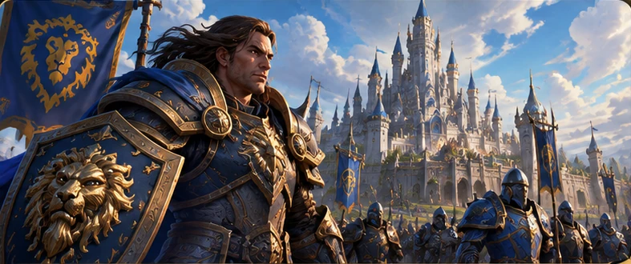
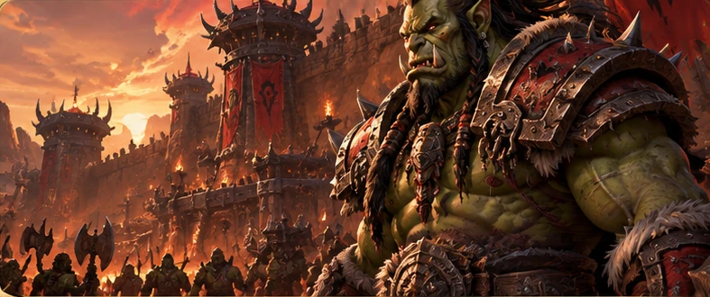
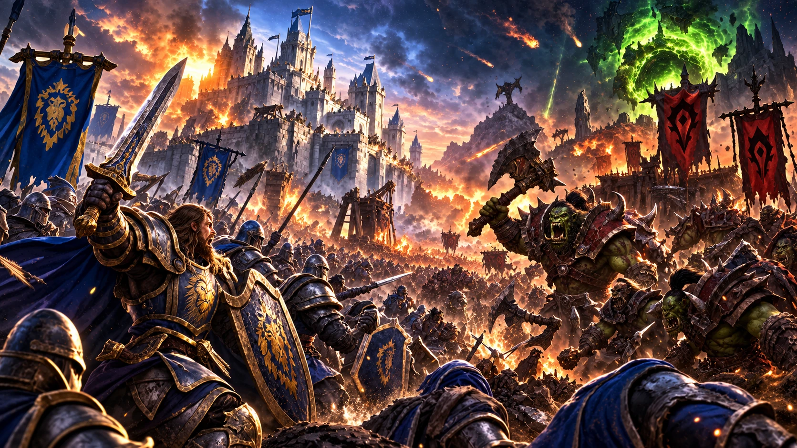
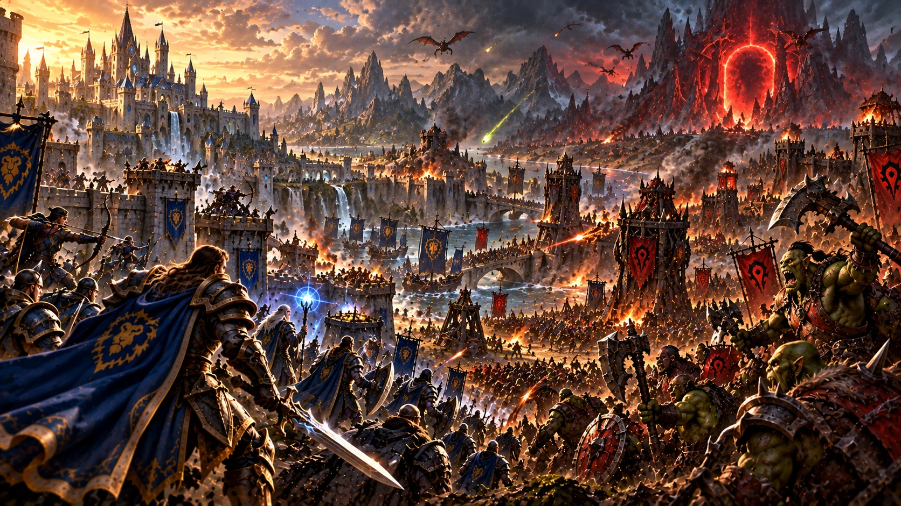
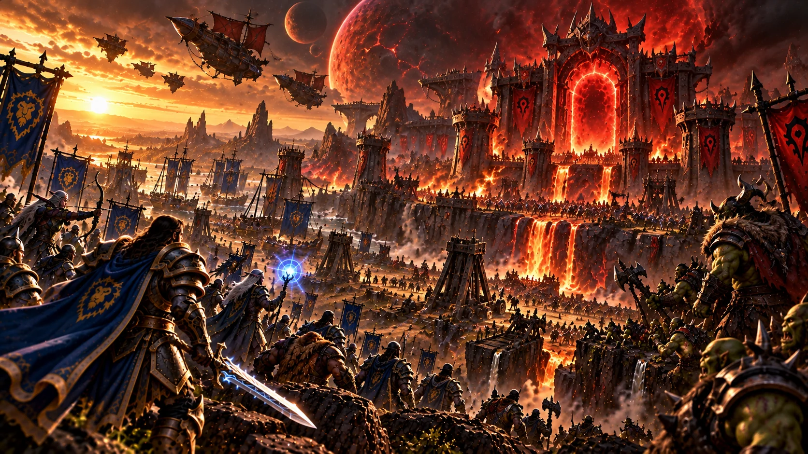
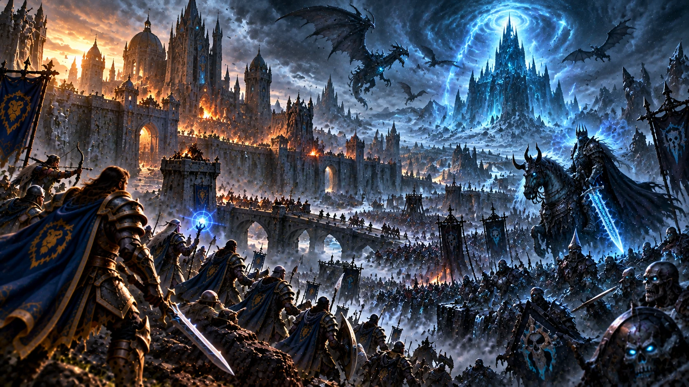
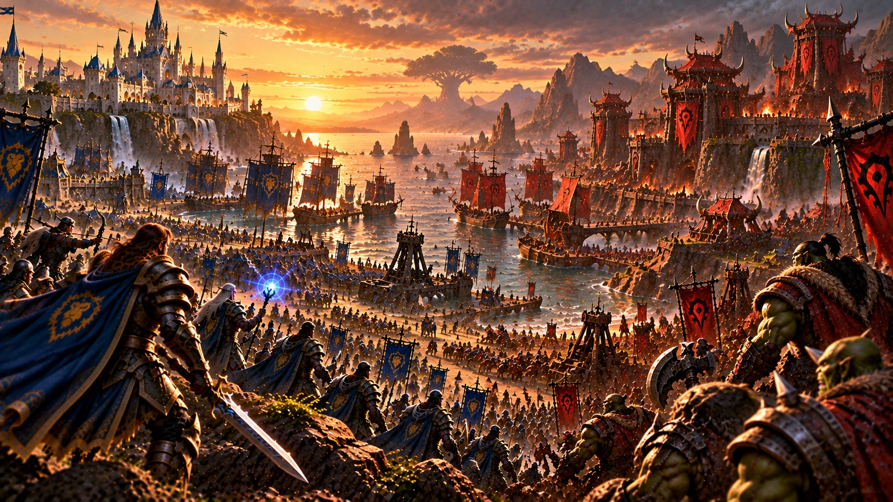

Des premières invasions orques à la fin de Warcraft III: The Frozen Throne : huit chapitres pour comprendre les guerres qui ont façonné Azeroth, sans révéler la suite de World of Warcraft.


CHAPITRE 01 / 08
La Première Guerre
La Porte des ténèbres et la chute de Hurlevent

Au commencement de la Première Guerre, deux mondes sont liés par un passage impossible : la Porte des ténèbres. Depuis Draenor, une Horde orque organisée autour de chefs de guerre et manipulée par de puissants sorciers pénètre en Azeroth. Ses premières incursions frappent le royaume de Hurlevent, qui ne comprend pas encore l’ampleur de la menace.
Le roi Llane Wrynn et son champion Anduin Lothar tentent de défendre le royaume. Les combats se multiplient, tandis que Medivh, Gardien de Tirisfal, se révèle lié à l’ouverture du portail. La guerre ne se résume pourtant pas à une opposition simple : parmi les orcs, des voix contestent déjà les méthodes de la Horde.
La prise de Hurlevent et la mort de Llane bouleversent les équilibres politiques. Les survivants traversent la Grande Mer pour trouver refuge au nord, à Lordaeron. La défaite de Hurlevent devient ainsi le point de départ d’une coalition bien plus vaste.
1 / 8
CHAPITRE 02 / 08
La Deuxième Guerre
L’Alliance de Lordaeron contre la Horde

Après la chute de Hurlevent, les réfugiés alertent les royaumes du nord. Sous l’impulsion du roi Terenas Menethil II et d’Anduin Lothar, plusieurs nations humaines unissent leurs forces. Nains, hauts-elfes et autres alliés prennent part à la défense de leurs terres : l’Alliance de Lordaeron vient de naître.
La Horde, désormais dirigée par Orgrim Marteau-du-destin, mène une campagne d’une ampleur inédite. Ses armées progressent vers le nord, menacent les grandes cités et exploitent de nouvelles alliances, notamment avec les trolls amani. La guerre s’étend sur terre, sur mer et dans les airs.
La résistance finit par reprendre l’initiative. Après de lourds affrontements et la mort d’Anduin Lothar, Turalyon contribue à rallier les troupes de l’Alliance. La Horde est repoussée jusqu’à la Porte des ténèbres, mais la victoire ne résout ni le destin des orcs ni les dangers venus de Draenor.
2 / 8
CHAPITRE 03 / 08
Au-delà de la Porte des ténèbres
L’expédition vers Draenor et la fin d’un monde

La fermeture de la Porte des ténèbres ne met pas fin à la menace. Sur Draenor, Ner’zhul cherche à ouvrir de nouveaux passages vers d’autres mondes. Ses projets nécessitent de puissants artefacts, dont la récupération entraîne de nouvelles incursions en Azeroth.
Pour empêcher une nouvelle invasion, l’Alliance envoie une expédition au-delà du portail. Khadgar, Turalyon, Alleria Coursevent, Danath Trollemort et Kurdran Marteau-Hardi figurent parmi les héros de cette campagne. Leur mission est périlleuse : ils combattent loin de leur monde, sur un territoire déjà profondément transformé par la magie gangrenée.
Les portails ouverts par Ner’zhul déchirent Draenor. L’expédition tente de limiter la catastrophe et ferme la liaison avec Azeroth pour protéger son monde d’origine. Les restes de Draenor deviendront l’Outreterre, un ensemble de terres brisées suspendues dans le Néant distordu.
3 / 8
CHAPITRE 04 / 08
La Troisième Guerre
Le Fléau, Arthas et le mont Hyjal

Bien des années plus tard, une nouvelle menace s’étend dans les royaumes humains : une peste surnaturelle qui transforme les populations en morts-vivants. Le prince Arthas Menethil entreprend de l’arrêter, mais ses choix l’entraînent sur une voie tragique. La chute de Lordaeron marque l’effondrement d’un pilier de l’ancienne Alliance.
Derrière le Fléau se dessinent les ambitions de la Légion ardente. Les démons d’Archimonde débarquent en Azeroth et cherchent à atteindre l’Arbre-Monde Nordrassil. Dans le même temps, Thrall conduit une nouvelle Horde vers Kalimdor, tandis que les elfes de la nuit défendent leurs terres ancestrales.
Face à une menace commune, les forces de Jaina Portvaillant, de Thrall et des elfes de la nuit coopèrent. La bataille du mont Hyjal met fin à l’offensive d’Archimonde, mais la victoire se paie d’une transformation profonde du monde : l’ancien ordre politique a disparu.
4 / 8
CHAPITRE 05 / 08
Un nouvel ordre après la guerre
Durotar, Orgrimmar et Theramore

Après la bataille du mont Hyjal, Azeroth ne retrouve pas immédiatement la paix. Les anciennes puissances ont été ébranlées et des peuples autrefois ennemis doivent apprendre à vivre sur un continent qu’ils connaissent encore mal. Thrall cherche avant tout à offrir aux orcs une patrie où ils ne seront plus les instruments d’une guerre de conquête.
En Kalimdor, les orcs établissent Durotar et bâtissent Orgrimmar. Les trolls sombrelances et les taurens sont leurs alliés dans cette entreprise difficile. La nouvelle Horde n’efface pas le passé, mais tente de construire son avenir autour de la survie, de l’honneur et de la solidarité entre ses peuples.
Jaina Portvaillant rassemble de son côté des survivants humains à Theramore. Elle sait que l’Alliance et la Horde ont pu combattre ensemble contre la Légion, mais la méfiance demeure. L’arrivée de l’amiral Daelin Portvaillant et son refus de croire à une paix possible montrent combien les blessures des guerres précédentes restent profondes.
5 / 8
CHAPITRE 06 / 08
Les héritages de la Troisième Guerre
Un monde transformé, des peuples dispersés
La Troisième Guerre a profondément bouleversé la carte d’Azeroth. Lordaeron, autrefois cœur d’une puissante alliance de royaumes humains, est ravagé par le Fléau. Des familles sont dispersées, des cités ont disparu et les survivants doivent trouver refuge ou rebâtir ailleurs.
Les hauts-elfes ont subi la destruction de Quel’Thalas et du Puits de soleil. Sous la conduite du prince Kael’thas Haut-Soleil, une partie d’entre eux prend le nom d’elfes de sang. Leur histoire illustre le prix des catastrophes de la guerre : il ne suffit pas de remporter une bataille pour retrouver son peuple tel qu’il était.
En Kalimdor, les elfes de la nuit doivent eux aussi s’adapter à une ère nouvelle. La défense du mont Hyjal a sauvé Azeroth, mais le sacrifice lié à Nordrassil a changé leur destin. Humains, orcs, elfes, trolls et taurens abordent ainsi l’avenir avec des attentes et des blessures très différentes.
6 / 8
CHAPITRE 07 / 08
Les destins de The Frozen Throne
Arthas, Illidan et les luttes pour l’avenir
Après la défaite d’Archimonde, plusieurs conflits se poursuivent loin des champs de bataille du mont Hyjal. Le Fléau reste une puissance redoutable, mais son contrôle se fragilise. Arthas, devenu chevalier de la mort, reçoit l’appel du Roi-liche et entreprend un voyage décisif vers le Norfendre.
Pendant ce temps, Illidan Hurlorage poursuit ses propres ambitions. Ses choix l’opposent à d’anciens alliés et le conduisent à croiser la route de Kael’thas et de la dame Vashj. Leurs alliances sont nées de nécessités et de rivalités qui prennent racine dans la Troisième Guerre.
Le dénouement de The Frozen Throne place Arthas au sommet du Trône de glace, où son destin rejoint celui du Roi-liche. Cette conclusion est une étape majeure du récit de Warcraft III. Notre dossier s’arrête à cette situation : il ne raconte pas les événements qui lui succèdent dans World of Warcraft.
7 / 8
CHAPITRE 08 / 08
Azeroth à l’aube d’une nouvelle ère
Ce qu’il faut connaître avant la suite
Au terme de Warcraft III et de The Frozen Throne, le monde est profondément transformé. L’ancienne Alliance de Lordaeron n’a plus sa cohésion d’autrefois ; la nouvelle Horde s’est installée en Kalimdor ; les elfes de la nuit ont découvert de nouveaux voisins ; et de nombreux survivants cherchent encore leur place.
Plusieurs figures permettent de comprendre cet équilibre fragile : Thrall tente de guider la Horde vers une autre voie ; Jaina défend l’espoir d’une coexistence ; les héritiers de Quel’Thalas font face à une crise identitaire ; Illidan suit un chemin qui lui est propre ; et Arthas demeure associé à la menace du Fléau.
Ces éléments suffisent à comprendre les grandes tensions qui traversent Azeroth au moment où s’achève le récit des jeux de stratégie. La suite de l’histoire mérite d’être découverte à son rythme, en jouant : les archives s’arrêtent ici volontairement, sans révéler les campagnes de World of Warcraft.
8 / 8
Les illustrations de ce dossier sont provisoires. Les scènes historiques dédiées seront ajoutées chapitre par chapitre.